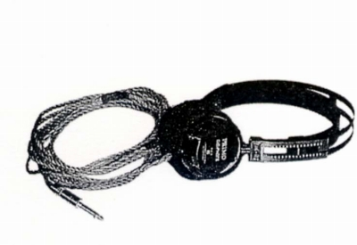
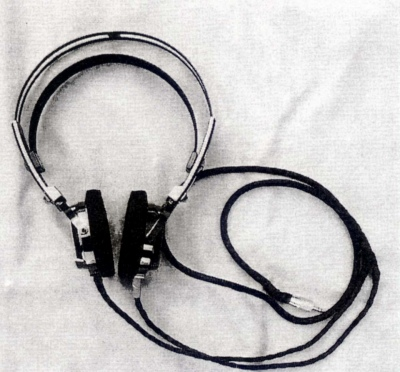
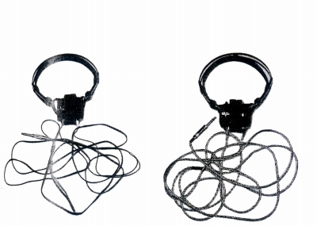
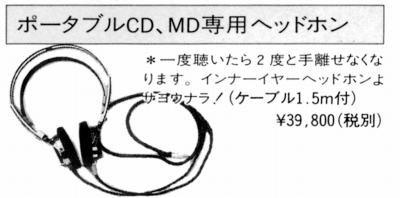

オーディオF・S・K
長年オーディオ・アクセサリー誌に広告を掲載していたガレージメーカー。電源ボックスや、ビニール・ゴム・テフロンなどを廃し絹・綿・紙を使用した各種のコード、「サウンドマジラー」と呼ぶアルミナのスペーサーなどを販売していた。またアンプやスピーカーの改造なども手がけていた。
ヘッドフォンについては1990年すぎ（1992年頃？）より、PRIMO （プリモ）と提携して同社のヘッドフォンのコードをFSKケーブルに換装したものを販売していた。2000年以降まで販売は続いたが、現在はプリモ側からのヘッドフォンの供給が止まった為、販売されていないようだ。
なお、サイト開設時（2009年）には、まだメーカーは存続していたと思うが、現時点の状態は不明である。
「PRIMO
CD-6」がベースモデルとされるが、このベースモデルが市販されていたかどうかは不明。ネット上では市販モデルを購入したとの書込もあるが、同社の市販モデルでは「CD-2」に酷似しており、それと別に販売されていたことには疑問がある。「CD-2」は1983年発売のモデルで、1995年頃まで販売されていた。「CD-6」を買ったとする書込のいくつかは、比較機種がソニーのMDR-CD999など「CD-2」の販売期間のモデルである。もしかしたら前期のベースモデルが「CD-2」、「CD-2」市販の中止以後にベースと個別生産されたのが「CD-6」なのかもしれない。両社のスペックは再生周波数帯域・定格、最大入力・重量（コード抜き）は同一で、ユニット口径（CD-2=48�o、CD-6=48.5�o）、インピーダンス（CD-2=38Ω、CD-6=40Ω）、感度（CD-2=104dB、CD-6=102dB）が異なる。なお最近市販の「CD-2」を持ち込み、コードを同社で変更したという個体がオークションに出品されていた。
なお現時点で入手した同社のカタログや広告ではCD1〜7までのモデルが掲載されているが、CD-4及びCD-6は欠番である。
FSKオリジナルヘッドホン（PRIMO CD-6？）

■価格 35,000円
■型式 セミオープン・ダイナミック型
■振動板 48.5�o
■インピーダンス 40Ω
■再生周波数帯域 5-22,000Hz
■許容入力150mW
■感度
102dB/mW
■コード
■重量 150g（コード含まず）
■発売 1992年頃
■販売終了
■備考 スペックはベースモデルPRIMO
CD-6のもの
コードの長さ、プラグの種類はオーダ時に選択可能だったと思われる。
価格は1992年の広告のもの。
2003年時で39,800円＋ケーブルの長さで変動との記載あり。
また1998年頃の広告には1.5m仕様のものが39,800円で掲載されている。

（1メートル、ミニプラグ仕様の個体）

（市販品との比較）

(1998年頃の広告より）